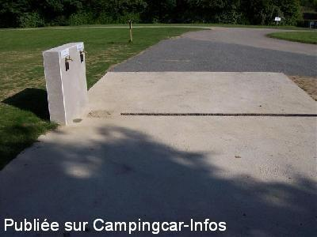
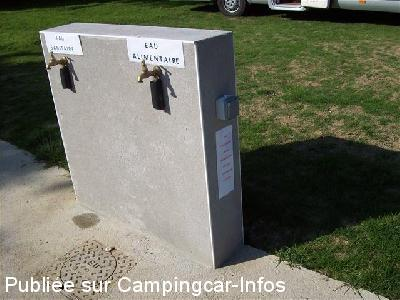
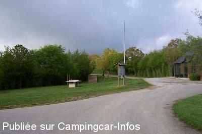

ASN = Aire de services avec stationnement nuit possible de :
VILLIERS CHARLEMAGNE
(N° 830)
Accès/adresse :
Rue des Haies
53170 VILLIERS CHARLEMAGNE
53170 VILLIERS CHARLEMAGNE
Latitude : (Nord) 47.92028° Décimaux ou 47° 55′ 13′′
Longitude : (Ouest) -0.68188° Décimaux ou 0° 40′ 54′′
Tarif : 2015
Stationnement nuitée : 8,30 €
Type de borne : Artisanale
Services :


Tous commerces
Autres informations :
Ouvert toute l'année
4 emplacements sur herbe
1 prise électrique, pour les camping-caristes justifiant de la nécessité du branchement d’un appareil médical.
Tel : +33 (0)243 077 168
http://www.vacancesetpeche.fr/camping-cars-une-nouvelle-aire-de-services/

Le 29/05/2015 par

Le 29/05/2015 par

Le 05/05/2005 par danynounet
de
yvanlagalette
le 11/08/2013 :
toujours gratuit la première nuit et 7,9€ ensuite aire très calme juste un problème il y a un seul robinet d'eau pour le plein ainsi que le rinçage des cassettes
toujours gratuit la première nuit et 7,9€ ensuite aire très calme juste un problème il y a un seul robinet d'eau pour le plein ainsi que le rinçage des cassettes
de
jean pierre
le 03/07/2011 :
le stationnement,l électricité,eau, vidange sont gratuit la première nuit.5 euros après.superbe aires tres calme a coté du village du pécheur et du camping.
le stationnement,l électricité,eau, vidange sont gratuit la première nuit.5 euros après.superbe aires tres calme a coté du village du pécheur et du camping.
de
Debarre
le 28/07/2008 :
Aire très calme sur herbe avec vue sur plan d'eau, divers sentiers pédestres sont proposés. Merci.
Aire très calme sur herbe avec vue sur plan d'eau, divers sentiers pédestres sont proposés. Merci.
de
joëlle et guy
le 14/04/2008 :
Superbe, calme, parfait
Superbe, calme, parfait
de
pascal
le 26/04/2006 :
Aire trés sympa. Le stationnement est payant, 5€ la nuit et les services 2€.
Aire trés sympa. Le stationnement est payant, 5€ la nuit et les services 2€.